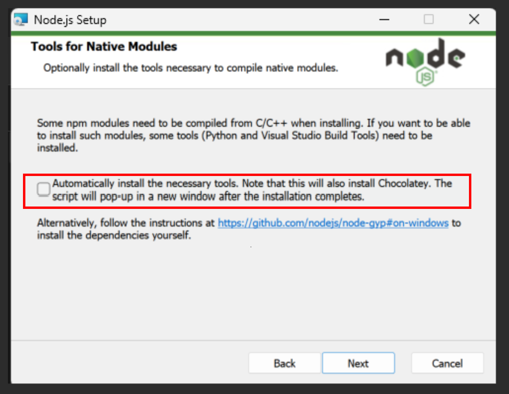

System Requirements
- Operating System: Windows 11
- Hardware Requirements: At least 1GB RAM
- Network Connection: Required to download the installation package
Installation Steps
1. Download Node.js
Visit the official Node.js website and select the installation package suitable for your operating system to download.
2. Install Node.js
Follow the steps below to install based on your operating system:
- Windows: Double-click the downloaded .msi file and follow the instructions in the installation wizard.

Note: "automatically install necessary tools" will install many developer tools that this program does not require, so do not check this option.
3. Install markmap-cli
After installing Node.js, you can use npm to install markmap-cli. Please enter the following command in the terminal or command prompt:
npm install -g markmap-cliThis will globally install markmap-cli, allowing you to use it anywhere.
4. Verify Installation
After installation, you can enter the following command in the terminal or command prompt to verify if markmap-cli was installed successfully:
npx markmap-cli --versionIf a version number is displayed, the installation was successful.
Frequently Asked Questions
- How to uninstall Node.js?
- Windows: Uninstall through "Programs and Features" in the Control Panel.
- What is the difference between Node.js and npm?
Node.js is a JavaScript runtime environment, while npm is the package manager for Node.js, used to install and manage libraries and tools for Node.js.